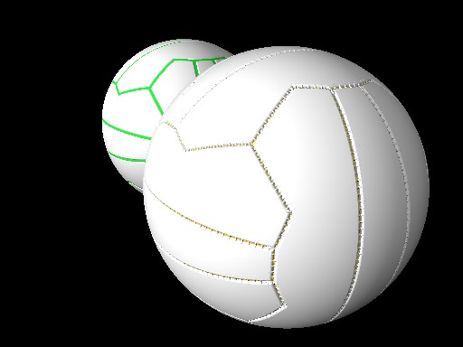

NB_Netball MacroNB_Netball (BallType)where: BallType is either "Stitched" or "Moulded"
Control VariablesThe following variables are optional, but can be set before calling the macro in order to override default settings:NB_BallRadiusNB_BallRadius can be used to specify the radius of the ball in POV-Ray units. The default value is 1 which generates a 1 POV-Ray unit radius ball centred at the origin.NB_BallTextureNB_BallTexture can be used to specify a texture for the ball. The default setting uses a plain white pigment with no normal and no special finish.NB_StitchTextureNB_StitchTexture can be used to specify a texture for the stitches if you choose to generate a Stitched ball. The default setting uses the same texture as the ball.NB_IndentTextureNB_IndentTexture can be used to specify a texture for the moulded seams if you choose to generate a Moulded ball. The default setting uses a plain green pigment with no normal and no special finish.NB_BladderTextureNB_BladderTexture can be used to specify a texture for the bladder if you choose to generate a Stitched ball. The default setting uses a plain yellow pigment with no normal and no special finish. |  |